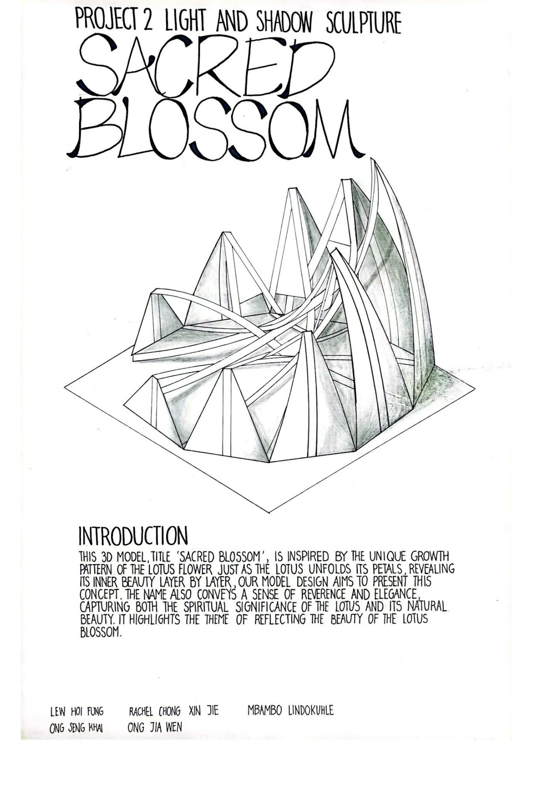
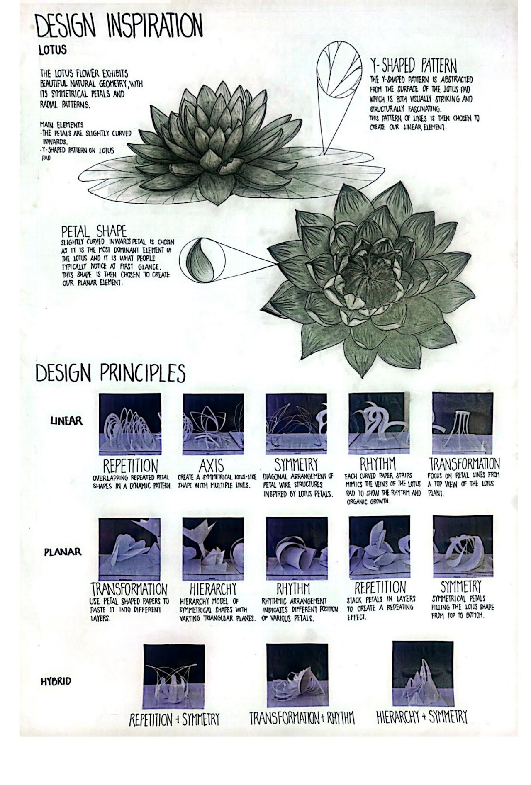
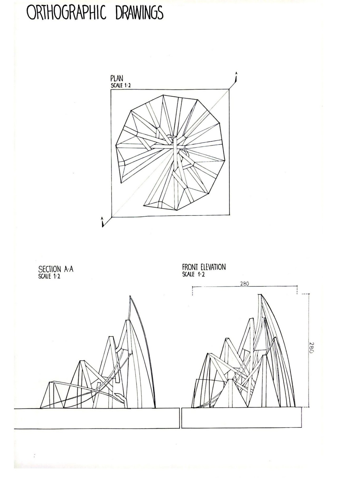
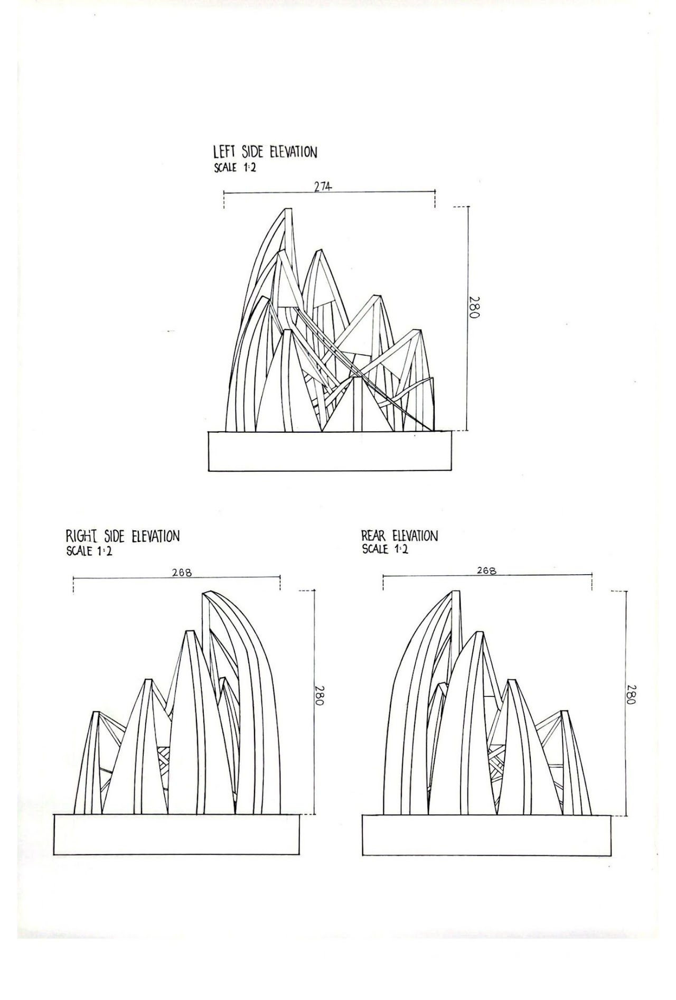
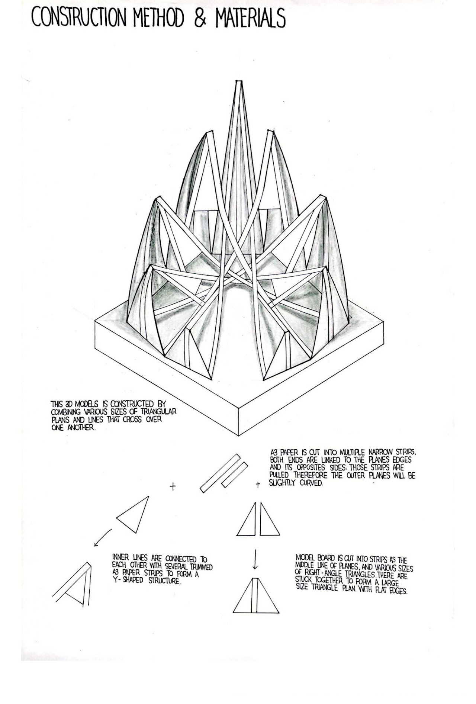
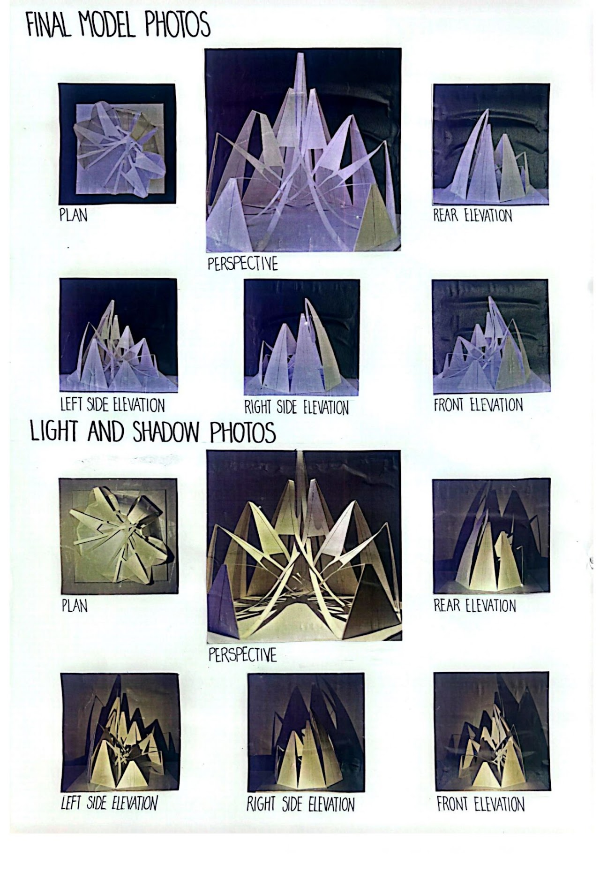

Light & Shadow Sculpture
This project focuses on the use of primary elements and ordering principles to create a sculpture that plays with light and shadow, inspired by the Lotus flower.
The Lotus — a symbol of purity, resilience, and spiritual awakening — guided the formal exploration of overlapping petal-like planes that cast dynamic shadows as light shifts throughout the day. The interplay of solid and void becomes the primary architectural language.
Through iterative physical modelling, the form was refined to maximise the drama of chiaroscuro while maintaining structural coherence. The result is a meditation on the beauty found in nature's geometry.




